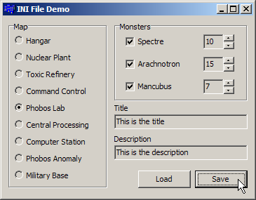

Session #6
Continuing from the last session, I've added a very useful feature that most applications support: The ability to remember settings between invocations. It was actually there last time, but I extended it and refactored it a bit. Plainly put, this means that, if you make changes to some of the settings in the program and then exit, the next time you run the program, those settings are the same. You won't "lose" the settings when you quit the program. This is done by saving the current settings to a file.This mechanism has been around since the beginning of Windows and the files are called INI files (pronounced: eye-en-eye or innee). These files have a simple and well-known format and should be used as an alternative to the failed-experiment known as the "Windows registry". (Contrary to what the article says.) Follow the previous link for a refresher on the structure of these files.
Topics explored this session:
In the header file:
In the implementation file:private: bool FGridEnabled; short FDefaultRowCount; void SetDefaultRowCount(short RowCount); // To set FDefaultRowCount public: __property bool GridEnabled = {read=FGridEnabled, write=FGridEnabled}; __property short DefaultRowCount = {read=FDefaultRowCount, write=SetDefaultRowCount};void TfrmConfig::SetDefaultRowCount(short RowCount) { // Constrain the new value short minrows = std::min(RowCount, MAX_ROW_COUNT); FDefaultRowCount = std::max(minrows, MIN_ROW_COUNT); }
The bulk of the work is done in these two methods:
The "General" page The "Programs" page
// Copy the values from the UI components to the private member fields.
// This is called after the user makes changes and clicks the "OK" button.
void TfrmConfig::DialogToFields(void)
{
GameExecutable = edtGameExecutable->Text;
GridEnabled = chkGridEnabled->Checked;
DefaultRowCount = (short) StrToInt(edtRows->Text);
DefaultColCount = (short) StrToInt(edtColumns->Text);
}
// Copy the values of the private member fields to the UI components.
// This is done when the UI is shown to the user. It can also be called
// after the user has made changes, but then clicks the "Cancel" button.
void TfrmConfig::FieldsToDialog(void)
{
edtGameExecutable->Text = GameExecutable;
chkGridEnabled->Checked = GridEnabled;
spnRows->Position = DefaultRowCount;
spnColumns->Position = DefaultColCount;
}
The bulk of the work is done in these methods in the configuration class:
// Read the saved settings from the .ini file.
void TfrmConfig::LoadSettings(void)
{
// TMemIniFile is a buffered ini file
AnsiString filename = ExtractFilePath(ParamStr(0)) + FConfigFilename;
TMemIniFile *inifile = new TMemIniFile(filename);
GameExecutable = inifile->ReadString("Programs", "GameExecutable", "");
GridEnabled = inifile->ReadBool("General", "GridEnabled", 0);
DefaultRowCount = (short)inifile->ReadInteger("General", "DefaultRowCount", DEFAULT_ROW_COUNT);
FieldsToDialog();
delete inifile;
}
// Write the current settings to the .ini file.
void TfrmConfig::SaveSettings(void)
{
// TMemIniFile is a buffered ini file
AnsiString filename = ExtractFilePath(ParamStr(0)) + FConfigFilename;
TMemIniFile *inifile = new TMemIniFile(filename);
inifile->WriteString("Programs", "ExecutableFile", GameExecutable);
inifile->WriteBool("General", "GridEnabled", GridEnabled);
inifile->WriteInteger("General", "DefaultRowCount", DefaultRowCount);
inifile->UpdateFile(); // Flush the buffer to disk before deleting!!!
delete inifile;
}
void TfrmConfig::SetGameExecutable(const AnsiString &exe)
{
// Make sure that the file is valid
if (FileExists(exe))
FGameExecutable = exe;
else // otherwise, display an error message
{
TMsgDlgButtons btns;
btns << mbOK << mbCancel << mbHelp;
MessageDlg(exe + " is not a valid filename.", mtError, btns, 0);
}
}
See the online help for MessageDlg and how to use it:
const char *m = "You can put\n\nnewlines in\nthe "
"message\n\n\nas well as\ttabs\ttabs\ttabs\n"
"\n\nBut I wouldn't recommend a lot of buttons.";
TMsgDlgButtons btns;
btns << mbOK << mbYes << mbCancel
<< mbAbort << mbNo << mbRetry
<< mbIgnore << mbYesToAll << mbNoToAll;
MessageDlg(m, mtWarning, btns, 0);
Here's the current UI:
| The application | The .ini file contents | |
|---|---|---|
|  |
[General] Width=365 Height=285 Top=173 Left=787 Title=This is the title Description=This is the description [Level] Map=4 Spectre=1 Arachnotron=1 Mancubus=1 SpectreCount=10 ArachnotronCount=15 MancubusCount=7 |
UI for configuring the game An example config file
Note about XE 3:
For reasons I can't explain yet, when building version 3 or 4 (PEditor3/PEditor4)
of the Platform Editor, the build fails with linker errors. The errors are related to using std::stack
in the code. There is a "work-around" that will get it to link.
The work-around is to build with the RTL (Run Time Library). You enable this in the C++ Linker options:
Ctrl+Shift+F11, choose C++ Linker, and set Link with Dynamic RTL to true.
It's possible that no one else will have this problem. It may be limited to my computer, maybe
because of a configuration problem when it was installed or something.
Exercises